Руководство по медицине
Добро пожаловать, морпех! Это базовое руководство по медицине, хирургия и описание роли медика находятся в отдельных файлах.
Диагностика
Классификация типов урона и способы их лечения
| Тип урона | Симптомы | Частые причины | Лечение |
|---|---|---|---|
| Физический |
|
|
|
| Ожоги |
|
|
|
| Токсины |
|
|
|
| Гипоксия |
|
|
|
Повреждение органов
| Орган | Симптомы | Частая причина | Лечение |
|---|---|---|---|
| Мозг |
|
|
|
| Глаза |
|
|
|
| Сердце |
|
|
|
| Лёгкие |
|
|
|
| Печень |
|
|
|
| Почки |
|
|
|
Медицинские состояния
| Состояние | Симптомы | Причина | Лечение |
|---|---|---|---|
| Перелом |
|
|
|
| Дефицит объема крови |
|
|
|
| Кровотечение |
|
|
|
| Внутреннее кровотечение |
|
|
|
| Боль |
|
|
|
| Критическое состояние |
|
|
|
| Отсутствующая конечность |
|
|
|
| Осколки и предметы |
|
|
|
| Заражение ксеноморфом |
|
|
|
Медицина
Лекарства
| Тип | Описание | Передозировка |
|---|---|---|
| Алкизин | Лечит мозг без хирургического вмешательства | 30 |
| Бикардин | Лечит физический урон | 30 |
| Дермалин | Быстро лечит ожоги | 15 |
| Дексалин | Лечит гипоксию | 30 |
| Дексалин+ | Быстро лечит гипоксию. | 15 |
| Диловин | Лечит токсины | 30 |
| Эпинефрин/Адреналин | Повышает лечение от дефибрилляции для физического, термического, токсического урона на 30. Должен вводится внутривенно! Не может приниматься в таблетках! | 10.5 |
| Имидазолин | Лечит глаза без хирургического вмешательства | 30 |
| Инапровалин | Предотвращает дальнейшее получение урона кислородом от нахождения в критическом состоянии. | 60 |
| Келотан | Лечит ожоги | 30 |
| Мералин | Быстро лечит физический урон | 15 |
| Оксикодон | Очень сильное обезболивающее | 20 |
| Парацетамол | Слабое обезболивающее | 60 |
| Перидаксон | Предотвращает последствия повреждения органов. Не лечит органы | 15 |
| Риеталин | Устраняет инвалидность и уродства | 30 |
| Трамадол | Сильное обезболивающее | 30 |
| Трикордразин | Медленное лечение всех типов урона кроме генетического | 30 |
Медицинские контейнеры
Препараты поставляются в трёх формах: портативные инъекторы, таблетницы и флаконы.
Инъекторы
Стандартные модели рассчитаны на 3 дозы, каждая из которых составляет ровно половину порога передозировки. Особняком стоит Экстренный инъектор — уникальный инструмент, не имеющий аналогов в форме таблеток или растворов.
Экстренный инъектор (80 ед.) — мощный коктейль для критических ситуаций (30 бикаридина, 30 келотана, 20 оксикодона):
- Доступность: конструкция позволяет использовать его мгновенно, не требуя медицинского обучения.
- Назначение: применяется как финальное средство стабилизации, когда важна каждая секунда.
Таблетницы
Содержат препараты в твердой форме. Позволяют брать много лекарств в компактном виде. Дозировка активного вещества в одной таблетке идентична одной дозе автоинъектора.
Флаконы
Стеклянные емкости с жидким реагентом. Требуют наличия шприца для извлечения содержимого.
- Объем: шприц вмещает до 15 единиц жидкости.
- Контроль: вы можете точно настраивать количество вводимого препарата (шаг в 5, 10 или 15 единиц).
Экипировка
| Предмет | Описание |
|---|---|
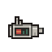 Анализатор здровья |
Показывает урон, внутреннее кровотечение, переломы, уровень крови, группу крови, голографические карточки, температуру тела, пульс. Не показывает травмы органов и заражение ксеноморфом |
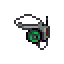 Медицинский ИЛС |
Визуальный интерфейс: шкалы здоровья, голокарты состояния и прогресс реанимации над головами целей |
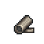 Бинт |
Останавливает кровотечение, лечит физический урон |
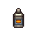 Мазь от ожогов |
Лечит ожоги |
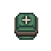 Продвинутый набор для лечения травм |
Эффективно лечит физический урон |
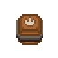 Продвинутый набор для лечения ожогов |
Эффективно лечит ожоги |
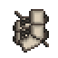 Шины |
Фиксирует переломы |
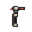 Гипоспрей |
Мгновенная инъекция до 30 ед. Испольует флаконы для восполнения |
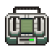 Дефибриллятор |
Реанимация |
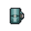 Стазис-мешок |
Замедляет кровотечение и развитие личинки ксеноморфа |
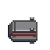 Каталка для транспортировки |
Позволяет перевозить пациента без внутренних травм от шрапнели или переломов. Так же рекомендуется для проведения операций |
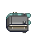 Носилки для эвакуации |
На открытом небе позволяет эвакуировать человека на шаттл |
Система медицинской маркировки
Используйте интерфейс ИЛС или анализатор здоровья для присвоения пациенту голографической карточки. Данная мера обязательна при работе в составе группы медиков для эффективной сортировки раненых и исключения путаницы:
| Цвет | Описание |
|---|---|
| Оранжевый | Пациенту требуется несрочная операция |
| Красный | Критическое состояние. Требуется неотложная помощь |
| Фиолетовый | Пациент заражён личинкой ксеноморфа |
| Чёрный | Пациент мёртв |
Медицинские устройства
| Устройство | Описание |
|---|---|
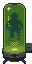 Криокамера |
Лечение в стазисе. Требует пробирку с лекарством (Криоксадон/Клонексадон). Наносит небольшой урон холодом. |
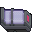 Слипер |
Введение лекарств и диализ. Не стабилизирует состояние. |
| Продвинутый анализатор здоровья | Полное сканирование: органы, переломы, импланты, паразиты. |
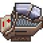 АвтоДок |
Автоматическая хирургия. |
Медицинские процедуры
СЛР
Поддерживает жизнедеятельность в критическом состоянии, замедляя наступление окончательной смерти.
- Подготовка: Снимите маски с себя и пациента.
- Готовность: Свободные руки, режим Help.
- Запуск: Кликните по пациенту для начала цикла.
Процедура оживления
- Проверьте пульс/иконку сердца в ИЛС.
- Сканируйте анализатором.
- Если урон < 200: Снимите броню, примените дефибриллятор.
- Если урон > 200: Лечите травма/ожоговыми наборами и нитью.
- Дефибрилляция занимает 7 секунд.
- После оживления дайте лекарства для восстановления.
Показатели состояния реанимации
| Иконка | Значение |
|---|---|
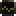 |
Зеленый: Можно реанимировать (~5 минут). |
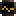 |
Желтый: Осталось ~3 минуты. |
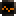 |
Красный мигающий: Осталась ~1 минута. |
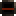 |
Красный: Нулевая мозговая активность (DNR). Статус может быть временным и сменится на любой, что выше |
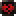 |
Сердце повреждено (Разрыв сердца). Нужна операция. |
| Реанимация невозможна. |
Не реанимируемые тела
- С дырой от личинки ксеноморфа в груди
- Без головы
- DNR / Braindead
Починка синтетиков
- Дефибриллятор оживляет, если урон < 200.
- Лечение: Сварка (физ. урон), Кабель (ожоги).
- Повреждение органов: Нанопаста.
- Синтетики не могут окончательно умереть если тело и голова не были потеряны. Даже если голова оторвана.
Переливание крови
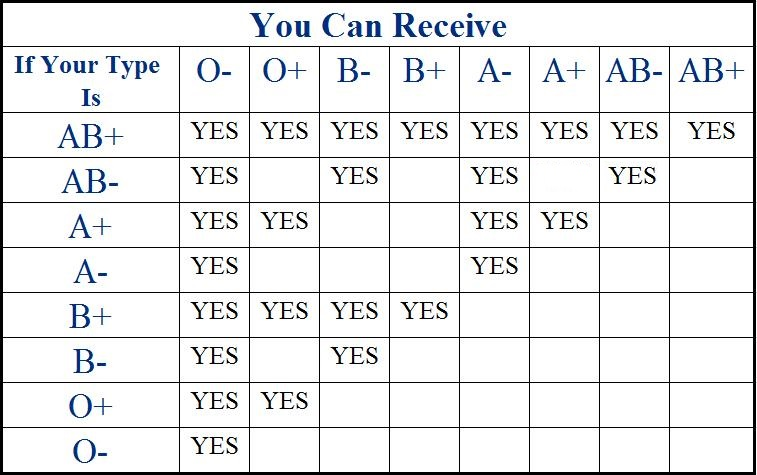
- Используйте пакеты с совместимой кровью.
- Капельница если хотите не стоять и держать пакет с кровью над человеком
- Железо и еда помогают восстановить кровь
Общие советы
- Клонексадон лечит внутреннее кровотечение быстрее криоксадона.
- Следите за передозировками.
- Не забывайте кормить пациентов.